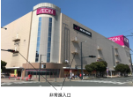
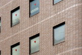

2024年
問題101 建物の防火対策に関する次の記述のうち，最も不適当なものはどれか．
（1）特定防火設備は，鉄製防火扉等，火災を閉じ込めることができる性能を有する防火設備である．
（2）防炎製品は，カーテン，暗幕，絨毯等に薬剤処理をして着火や燃え広がりを効果的に抑制したもので，消防法令で定められている．
（3）建築基準法令で定められる非常用照明装置の避難上有効な照度は，光源が白熱電灯の場合とLEDランプの場合では異なる．
（4）第二種排煙は，給気ファンにより排煙対象室に正圧をかけた排煙で，押出し排煙とも呼ばれる．
（5）非常用進入口は，非常時の消防隊の進入口として用いられるもので，逆三角形の赤色反射塗料で3階以上の階の窓等に表示される．
2024年
問題101 正解（2） 頻出度AA
消防法令で定められているのは，防炎防火対象物で使用が義務付けられている「防炎物品」である（消防法第8条の3）．対象は，カーテン，布製ブラインド，暗幕，じゅうたん等，展示用合板，どん帳その他舞台において使用する幕，舞台において使用する大道具用の合板，工事用シート．
「防炎製品」は公益財団法人日本防炎協会が認定した，防炎対象物品以外の防炎対策商品．寝具類，テント類，シート類，幕類，非常用持出袋，防災頭巾等，防災頭巾等側地，防災頭巾等詰物類，衣服類，布張家具等，布張家具等側地，自動車・オートバイ等のボディカバー，ローパーティションパネル，襖紙・障子紙等，展示用パネル，祭壇，祭壇用白布，マット類，防護用ネット，防火服，防火服表地，木製等ブラインド，活動服，災害用間仕切り等，作業服などがある（出典：公益財団法人日本防炎協会）．
-(1) 特定防火設備：両面60分の遮炎性能を有する防火設備（建築基準法施行令第112 条）．因みに，「防火設備」とは，両面20分の遮炎性能を有する防火設備（同第 110 条の 3）．
-(3) 非常用の照明装置は，常温下で床面において水平面照度で1ルクス（蛍光灯又は LED ランプを用いる場合にあっては，2ルクス）以上を確保することができるものとしなければならない（国土交通省告示：非常用の照明装置の構造方法を定める件）．蛍光灯，LEDが2ルクスなのは，周囲が高温になったときに照度が下がりやすいためとされる．
倉庫などを除くほとんどの建築物に，非常用の照明設備の設置が建築基準法で規定されている．
ただし，次の各号のいずれかに該当する建築物又は建築物の部分については，設置しなくてもよい．
1．一戸建の住宅又は長屋若しくは共同住宅の住戸
2．病院の病室，下宿の宿泊室又は寄宿舎の寝室その他これらに類する居室
3．学校等
4．避難階又は避難階の直上階若しくは直下階の居室で避難上支障がないものその他これらに類するものとして国土交通大臣が定めるもの
-(4) 第2種排煙2024-101-1 図参照．煙排出量（換気量）は第2種機械換気と同じで，排煙機等の生み出す内外の圧力差と排煙窓（開口部）の有効面積から求められる．
-(5) 大雑把で不適切な記述．非常進入口（2024-101-2図参照）については次のとおり．

出典 東建コーポレーション株式会社
https://www.homemate-research-supermarket.com/dtl/00000000000000119969/ を基に作成
1．非常用進入口が必要な建築物
3階以上の建築物
2．非常用進入口が必要となる建築物の部分
道路，または幅4mの通路に面する部分
3階以上の各階，かつ高さ31m以下の部分
3．非常用進入口の構造
進入口の間隔：40m以下
進入口の大きさ：幅75㎝以上，高さ120㎝以上
進入口の高さ：床面から進入口下端まで80㎝以下
バルコニー：奥行1m以上，長さ4m以上
赤色灯：常時点灯，かつ30分間点灯の予備電源を設置
赤色反射塗料（▼マーク）：一辺20㎝の正三角形（2024-101-3図参照）
出典 ミドリ安全株式会社
https://ec.midori-anzen.com/shop/g/g4066073001/
4．非常用進入口の設置が免除されるのは，以下のいずれかに当てはまる場合
1）不燃性の物品の保管その他”これと同等以上に，火災の発生のおそれの少ない用途に供する階
2）特別の理由により屋外からの進入を防止する必要がある階で，その直上階または直下階から進入することができるもの
3）非常用エレベーターの設置
4）代替進入口（非常用進入口に代わる窓）の設置
5）吹抜きとなっている部分その他の一定の規模以上の空間で国土交通大臣が定めるもの
代替進入口（2024-101-4図参照）については次のとおり．

出典 https://www.willtec.jp/
https://www.risefor-career.com/live-learn-lead?id=BLOG000197
『代替進入口』は，非常用進入口に代わる窓のことで，災害時に消防隊が外部から進入するための開口部．
代替進入口の構造
進入口の間隔：10m以内ごとに1か所以上
進入口の大きさ：以下のいずれか
幅75㎝以上，高さ120㎝以上
直径1m以上の円が内接できるもの
進入口の高さ：進入口の下端から床面までは1.2m以下
代替進入口となる窓は，ガラスの厚みに一定の基準が定められている．
代替進入口となる開口部に，屋外からの進入をさまたげるような格子などは設置不可．
赤色反射塗料（▼マーク）：一辺20㎝の正三角形は，開口部がたくさんあり，どれが進入口か判別できない場合は，表示するのが望ましい．